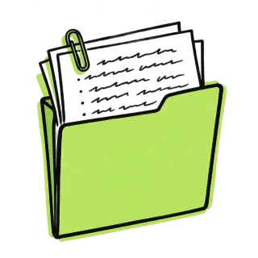
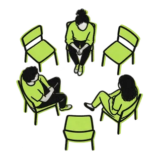
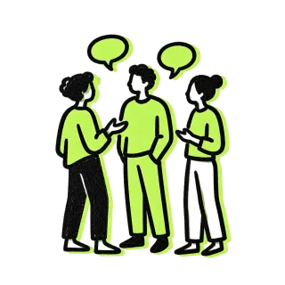
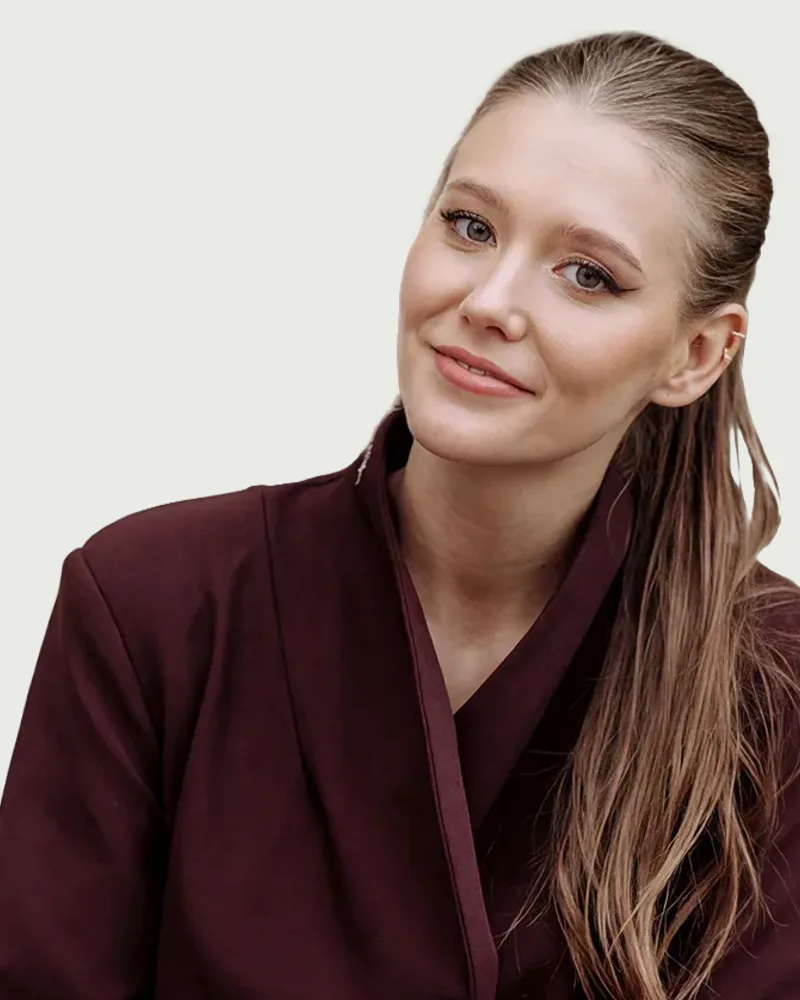

Еженедельная отработка кейсов
Интерактивные форматы каждый месяц. Разбираем смоделированные и учебные ситуационные кейсы, отрабатываем гипотезы, стратегии и терапевтические техники в безопасной среде.
Практикуйтесь в разборе сложных случаев каждый месяц: еженедельные разборы учебных и реальных кейсов, полимодальные супервизии, поддержка коллег в закрытом чате и доступ к материалам Академии Современной Психологии.
Стать участникомОнлайн. Отказаться можно в любой момент
И в паузах между клиентами часто возникают свои трудности:
Теория есть, но без регулярной практики и безопасной обратной связи сложно обрести устойчивость в кресле терапевта.
Покупать отдельные курсы или тренинги под каждую новую тему: это огромная нагрузка на бюджет практикующего специалиста.
Даже у опытных специалистов бывают клиенты, с которыми процесс заходит в тупик. В такие моменты необходима безопасная среда для совместного разбора и профессиональной поддержки.
Когда частная практика идёт ровно, но нет роста, чек не меняется, а двигаться дальше в одиночку становится скучно и тяжело.
Именно поэтому появился клуб «Между сессий»:чтобы вам не приходилось справлятьсясо всем этим в одиночку.
Стать участникомБезопасный старт и уверенность в кресле терапевта
Поможем справиться с тревогой первых сессий, выстроить границы и разобрать первые сложные случаи на супервизиях. Это возможность нарабатывать практический опыт и получать экспертную обратную связь без покупки дорогостоящих курсов.
Профилактика одиночества и глубокая экспертиза
Пространство для профессионального роста. Доступ к полимодальным разборам, узкопрофильным материалам и поддерживающей среде равных, где можно открыто обсудить всё, что остаётся за пределами кабинета.
Непрерывный контекст и практика между модулями
Поддерживайте рабочий и обучающий тонус в перерывах между программами. Не выпадайте из профессионального ритма, пользуйтесь закрытой библиотекой знаний, факультативами и живым чатом Академии.

Интерактивные форматы каждый месяц. Разбираем смоделированные и учебные ситуационные кейсы, отрабатываем гипотезы, стратегии и терапевтические техники в безопасной среде.

2 раза в месяцРазбор реальных сложных случаев из вашей практики с экспертами. Бережная обратная связь, подсвечивание слепых зон и поиск выхода из терапевтических тупиков.

Закрытый Telegram-чат без токсичности и обесценивания. Пространство для оперативного обсуждения рабочих вопросов, обмена опытом, рекомендаций смежных специалистов и поддержки.
Интенсивные мини-курсы, закрытые воркшопы и спецкурсы от практикующих спикеров по актуальным темам и методологиям.
Лекции от ведущих преподавателей АСП в записи + доступ к базе всех прошедших встреч клуба и накопительная скидка до 20% на флагманские программы Академии.
Форматы клуба стоят в разы дешевле, чем по отдельности, а стаж в клубе даёт скидку на программы обучения в Академии.
В среднем обучающие мини-курсы и тренинги навыков (от 10 занятий) стоят 15 000 ₽, 2 групповые супервизии в месяц 8 000 ₽, Speaking Club для психологов 12 000 ₽, а факультативы АСП и библиотека лекций доступны только студентам Академии. С подпиской вы заплатите 2 990 ₽ вместо 35 000 ₽.
По отдельности
В клубе
Каждый месяц в клубе делает обучение в Академии доступнее. Скидка суммируется и сохраняется за вами.
Все ведущие клуба: практикующие терапевты с подтверждённым опытом и/или преподаватели наших программ. Никакой воды, только реальный опыт, бережная супервизия и рабочие инструменты.

Клинический психолог, ACT-, FAP-терапевт, член АКПН и ACBS. Супервизор и исследовательница в области поведенческой науки.

Клинический психолог, КПТ-, АСТ-терапевтка, ведущая групп навыков по поведенческой активации для людей с депрессией.

Преподаватель английского языка и методики преподавания, методист Академии Современной Психологии.

Клинический психолог, практикующий КПТ-, АСТ-терапевт.

Клинический психолог и супервизор, преподаватель, ACT- и схема-терапевт. Член ACBS, ISST и АКПН.
Клинический психолог, КПТ- и схема-терапевт, директор по развитию АСП.

Психолог-консультант, АСТ-терапевт, руководитель спецпроектов АСП.
Все встречи проходят онлайн, а записи остаются в библиотеке. Выбирайте все форматы или только те, что нужны сейчас.
Не успели на эфир? Запись появляется в личном кабинете в течение суток.
Посещайте 1–2 ключевые встречи в неделю или погружайтесь во все форматы: вы сами управляете своим темпом.
От отработки практических навыков и супервизий до факап-таймов и разговорного английского.
Понедельник
Вторник
Среда
Четверг
Пятница
Понедельник
Вторник
Среда
Четверг
Пятница
Понедельник
Вторник
Среда
Четверг
Пятница
Понедельник
Вторник
Среда
Четверг
Пятница
Присоединиться к клубу «Между сессий» можно в пару кликов. После оплаты вы сразу получаете полный доступ ко всем материалам и закрытому чату.
Нажмите на кнопку и оформите подписку за 2 990 ₽/мес. Это безопасно и занимает меньше минуты.
Сразу после оплаты на вашу почту придут доступы к личному кабинету с библиотекой знаний и приглашение в закрытый Telegram-чат.
Смотрите актуальное расписание в чате, приходите на ближайшие живые встречи и изучайте материалы в своём темпе.
Подписка продлевается автоматически каждые 30 дней. Отменить её можно в любой момент в личном кабинете без звонков и объяснений.
Нет, клуб открыт для всех практикующих и начинающих психологов, независимо от того, где вы учились.
Клуб: пространство практики, супервизий и поддержки, а не образовательная программа, поэтому официальный удостоверяющий документ за участие не выдаётся. Но за прохождение отдельных мини-курсов вы получаете сертификаты участника.
Подписка продлевается автоматически каждые 30 дней. Вы можете отменить её в любой момент в личном кабинете в пару кликов. Доступ сохранится до конца оплаченного периода.
Записи лекций, факультативов и открытых разборов всегда доступны в библиотеке. При этом супервизии и закрытые практические встречи проходят только вживую без сохранения записей. Это необходимо для соблюдения конфиденциальности клиентских случаев.